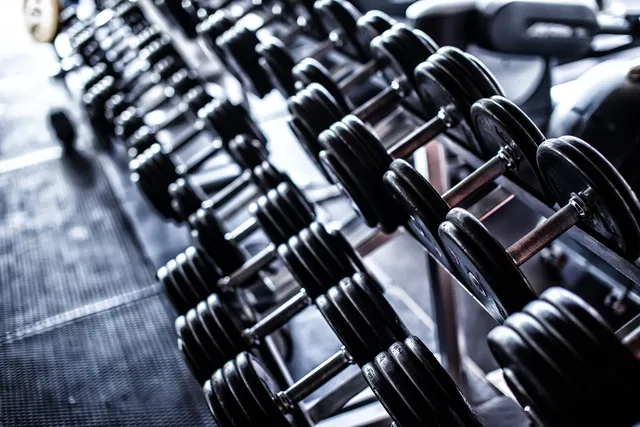
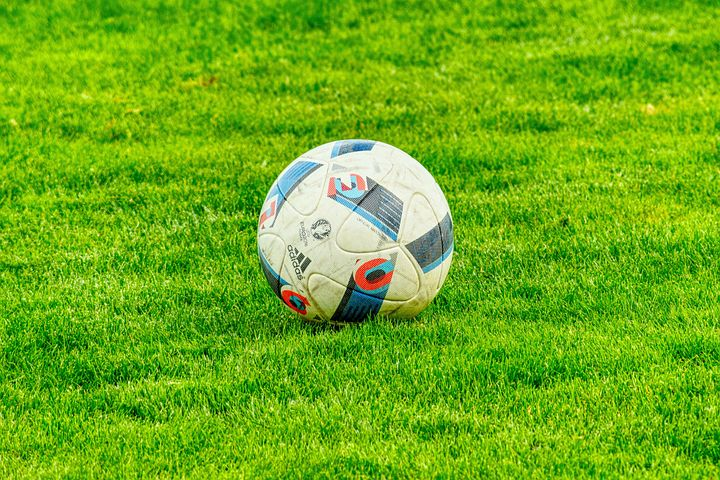

In mijn vrije tijd besteed ik graag aandacht aan activiteiten die zowel mijn fysieke gezondheid als mijn mentale verkracht bevorderen.
Mijn voornaamste Hobby's zijn voetbal, fitness en boksen.
Deze drie disciplines vullen elkaar goed aan en vormen samen een belangrijk onderdeel van mijn dagelijkse routine en persoonlijke ontwikkeling.

Fitness is voor mij meer dan alleen trainen in de sportschool; het is een levenstijl.
Ik ben begonnen met fitness om mijn algemene conditie te verbeteren en sterker te worden, maar al snel merkte ik dat het ook een positief effect had op mijn discipline en doorzettingsvermogen.
Door regelmatig te trainen, stel ik doelen voor mezelf en werk ik gestructureerd naar verbetering toe , zowel fysiek als mentaal.
Of het nu gaat om krachttraining, cardiotraining of het volgen van een schema, fitness leert mij om verantwoordelijkheid te nemen voor mijn eigen vooruitgang.
Het geeft mij ook rust en balans in het dagelijks leven.

Een andere belangrijke hobby van mij is voetbal.
Al van jongs af aan speel ik met veel enthousiasme voetbal, zowel recreatief als in teamverband.
Wat mij vooral aanspreekt aan deze sport is het compititieve karakter, het belang van teamwork en de techniek die erbij komt kijken.
Voetbal stimuleert niet alleen mijn lichamelijke conditie, maar leert mij ook sociale vaardigheden zoals samenwerken, communiceren en omgaan met winst en verlies.
Het spel brengt mensen samen en zorgt voor een gevoel van verbondenheid, iets wat ik erg waardeer.
Daarnaast zorgt het spelen van wedstrijden en het trainen met een team voor een gezonde dosis uitdaging en motivatie.
.jpg)
Tot slot heb ik een grote passie voor boksen.
Deze sport beoefen ik zowel als fysieke training als mentale discipline.
Boksen vraagt volledige concentratie, reactievermogen en uithoudingsvermogen. Tijdens het trainen werk ik niet alleen aan mijn kracht en snelheid, maar ook aan mijn focus en zelfvertrouwen .
Boksen is voor mij een manier om grenzen te verleggen en tegelijkertijd stress te reduceren.
Het is een intensieve sport die veel respect vereist, zowel voor jezelf als voor je tegenstander.
De structuur en het ritme van bokstrainingen geven mij een sterk gevoel van controle en persoonlijke groei.
Wat al deze hobby's met elkaar gemeen hebben, is dat ze mij helpen om het beste uit mezelf te halen.
Ze versterkten niet alleen mijn fysieke gezondheid, maar bieden ook mentale rust en voldoening. Door deze activiteiten blijf ik actief, gemotiveerd en leer ik voortdurend nieuwe dingen over mijn lichaam, grenzen en mogelijkheden. Bovendien hebben deze hobby's me geholpen om beter om te gaan met druk en verantwoordelijkheid, iets wat ik ook kan toepassen in andere aspecten van mijn leven, zoals school, werk of persoonlijke relaties.